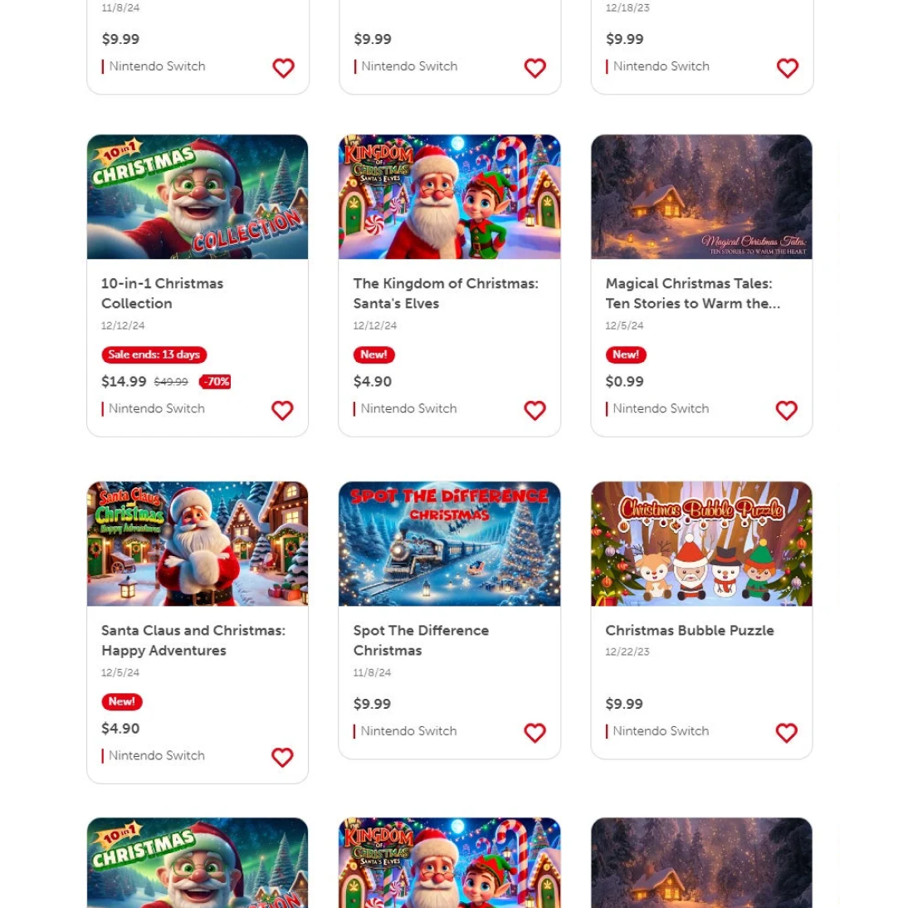
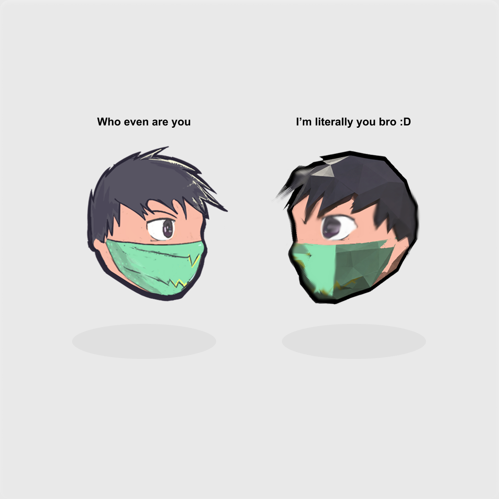
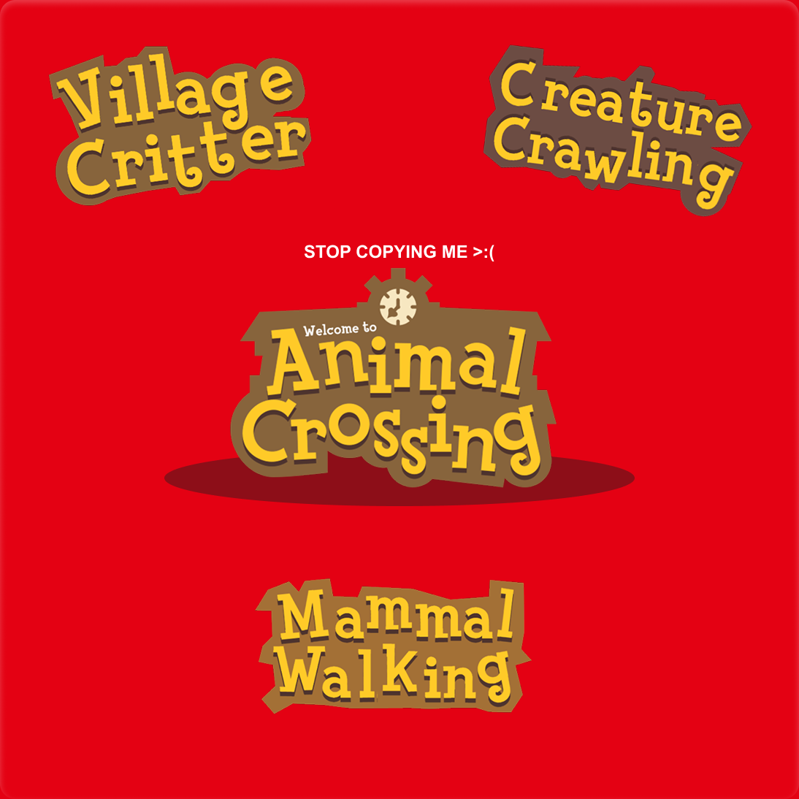
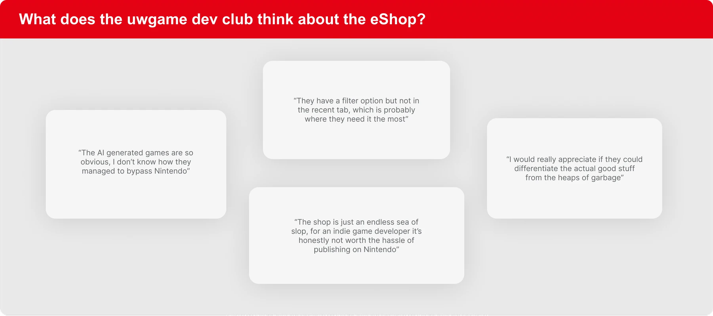
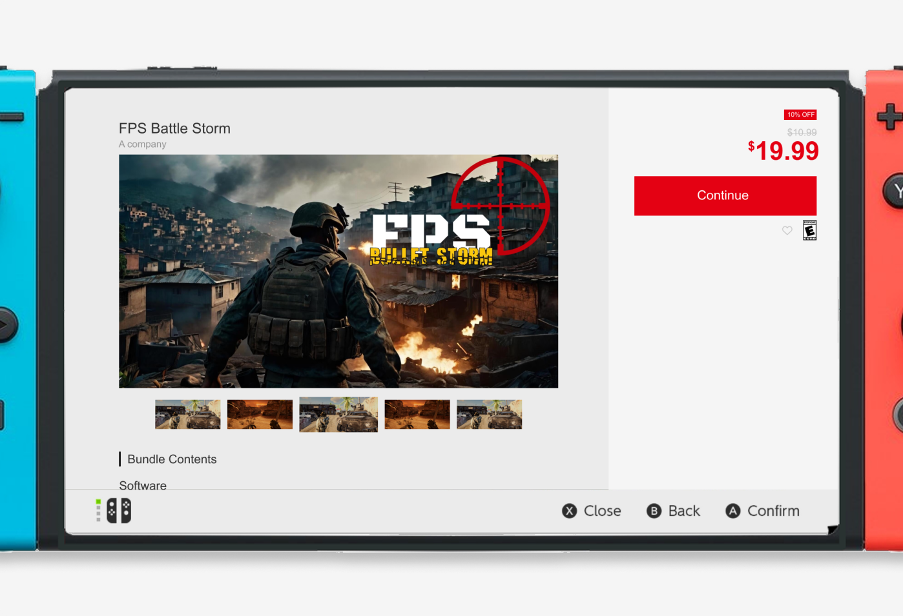
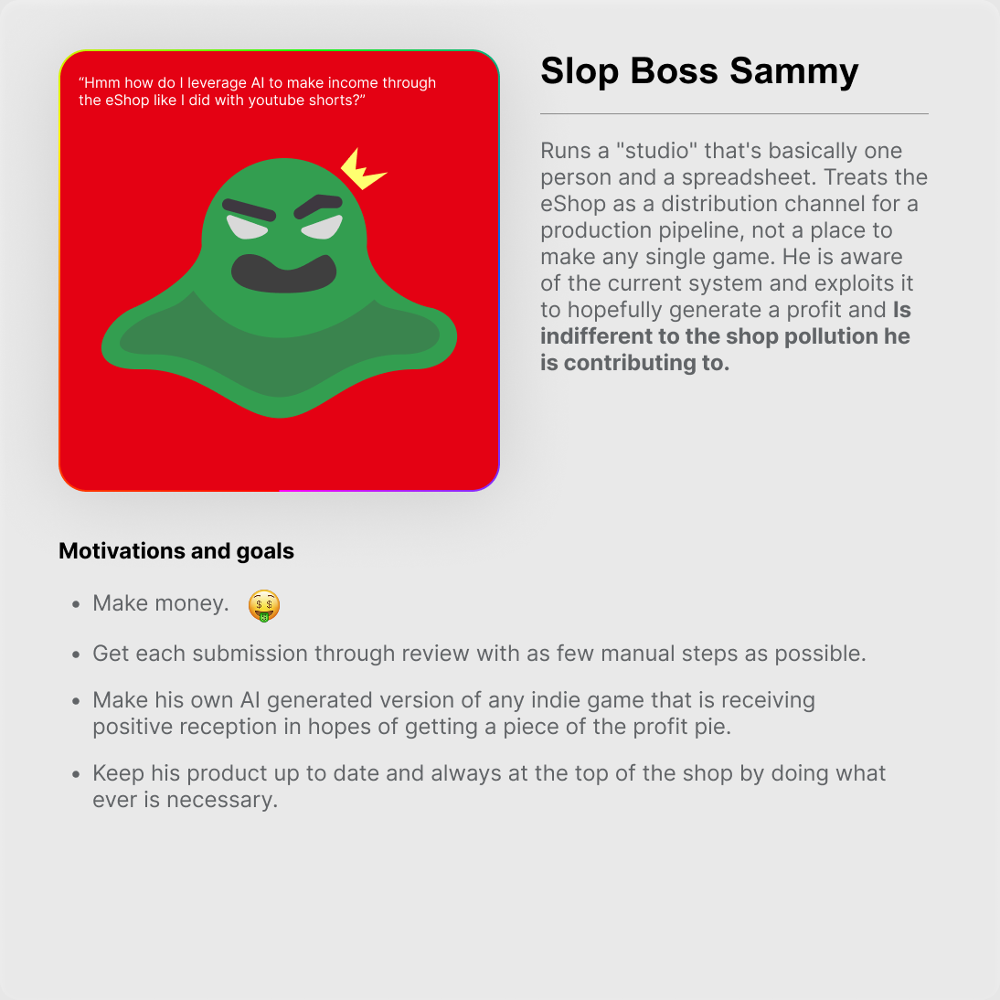
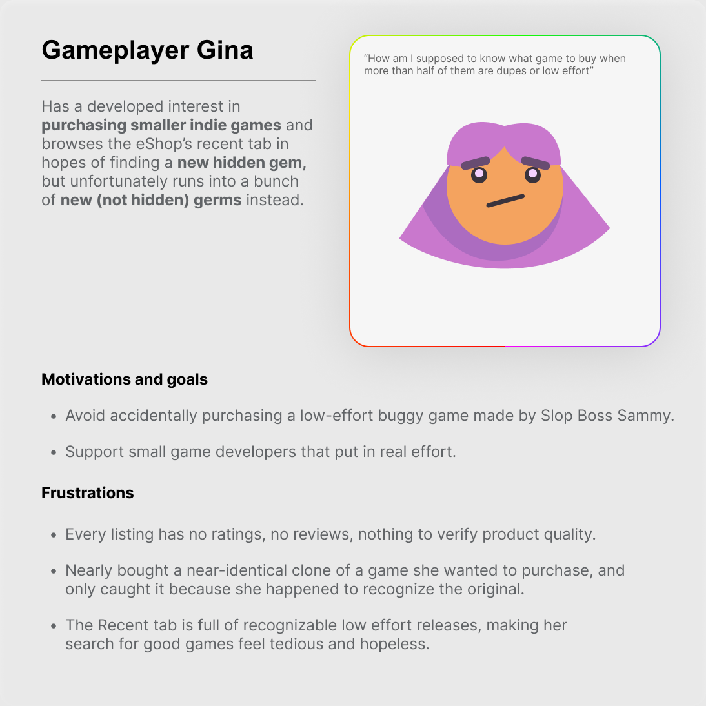
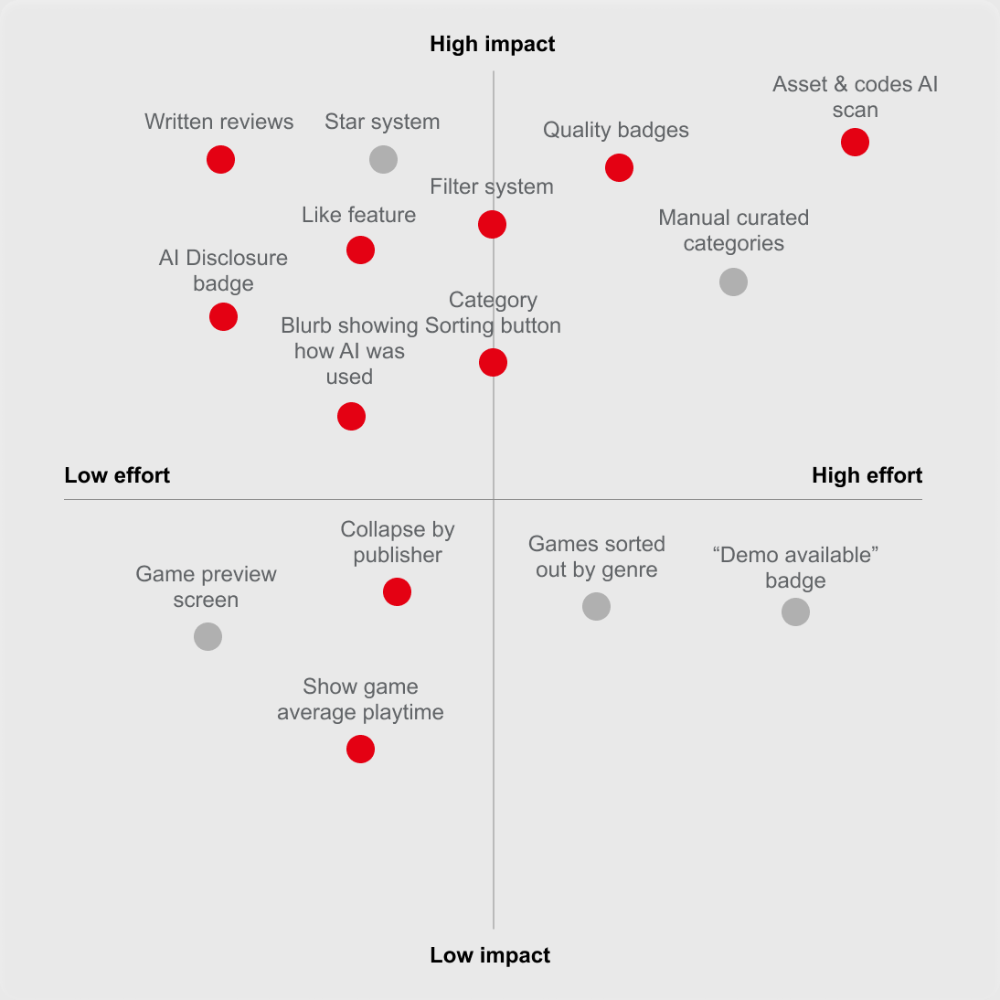
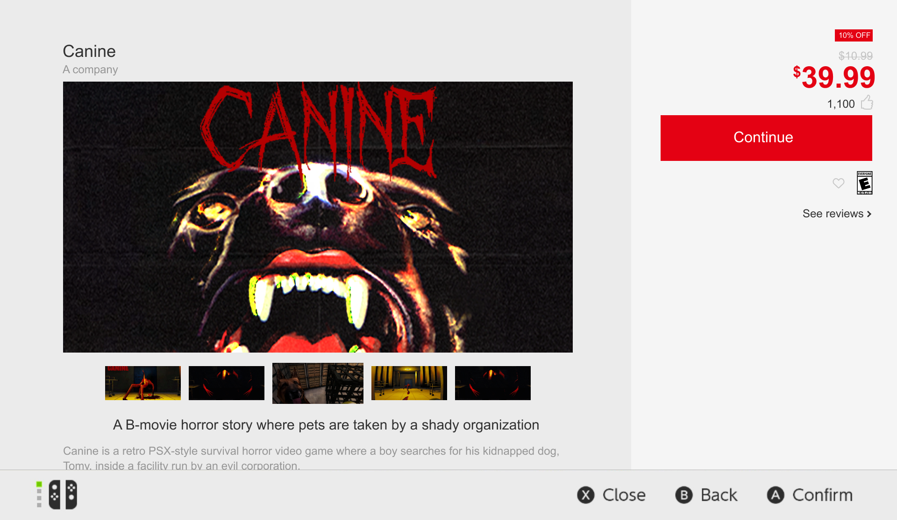
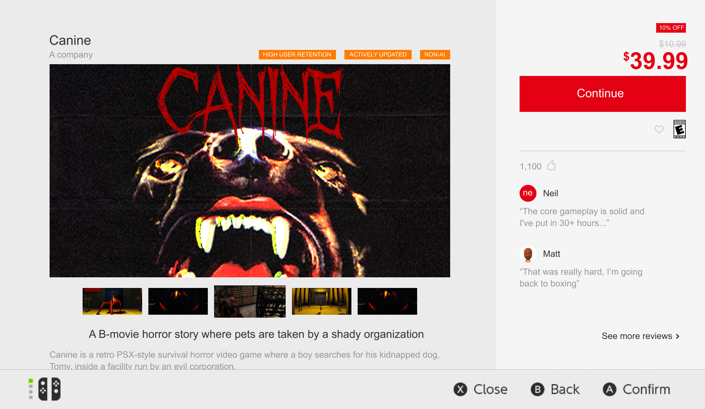

Revamping the Nintendo eShop
Sneak peek
Background information
What's the problem
The Nintendo eShop is Nintendo's official digital storefront for its game consoles. On both versions of the Nintendo Switch, it's where players browse, purchase, download, and update digital games. Over the summer I went back to revisit some of my favourite Switch games, which took me to the eShop homepage and down a genuinely interesting rabbit hole. I learned Nintendo's shop had built a reputation as one of the most frustrating storefronts around, especially for game discovery. With the sheer volume of low-quality and repetitive titles, it had become something close to the "Wild West" for gamers trying to find something worth buying.

No filter, no reviewsThe Recent section, one of the primary ways users discover new games, offers no filtering options, leaving small indie titles at the mercy of their chronological release order. There's also no review system at all: no star ratings, no written reviews, nothing. A buyer has to go in blind every time.

Flipped assetsNintendo's submission process also lacks effective checks against existing games. That lets direct clones, asset flips, and copied concepts reach the eShop without ever being flagged before release.

Non-stop slopThe eShop has reportedly seen a rise in AI-generated accounts publishing nearly 80 games since February 2023, contributing to a storefront increasingly crowded with low-effort releases. Since the New & Recent section uses a simple chronological list, every game receives roughly the same visibility, making it difficult for players to distinguish quality releases from shovelware.
Research
What does content regulation look like on other platforms?
During my secondary research, a common question came up: Why just Nintendo? Why haven’t other storefronts faced the same negative reputation? Alongside research with the UW Game Dev Club, I conducted primary research into how other platforms handle these concerns and how their systems could inform my solution. For example, Steam requires developers to complete a Content Survey before release, distinguishing between AI-generated content used during development and content generated live during gameplay. The result appears on the store page as a plain label, roughly the same visual weight as a mature-content flag.
![Table comparing storefronts. Steam: AI disclosure required, has reviews, covers real-time and pre-generated AI, release is blocked if tagging is skipped. Microsoft Store (Xbox): disclosure required, reviews, covers all generated content (art, audio, text, code), untagged AI is dropped from search. Apple App Store: disclosure required, reviews, covers live AI content rather than shipped assets, enforced by a metadata declaration plus an in-app reporting tool. PlayStation Store: no AI disclosure, has reviews. Google Play: disclosure required, reviews, scoped to sensitive categories rather than games generally.](../assets/images/eshop-storefront-comparison.webp)
What the other storefronts are doing.

What the UW Game Dev Club thinks about the eShop.
One constraint
One interesting fact I learned during my research process was that Nintendo previously had a star-rating system for games on its eShop before eventually removing the feature. Nintendo has not publicly disclosed the reason for its removal. Which raises questions about how I can implement features that respect this earlier decision.

How the page looks right now.
Laying it all out
Who should we be thinking of?
Based on the research I collected, I built two personas mapping out their wants and desires. Looking at the AI final boss's motivations helped me decide which parts of the storefront to regulate; looking at the game explorer's told me how to adjust the store design to fit what she's actually trying to do.


Slop Boss Sammy and Gameplayer Gina.
Which experiences need adjustment
The AI disclosure process
Nintendo's submission process is strict in all the wrong places. It's long and tedious where it doesn't matter, and it stops short where it counts: there are no checks for AI use, asset flips, or low-quality clones. That gap is what lets so much low-effort work reach the page at all.
The review system
Players have no way to talk to each other on the eShop at all. That takes away the most obvious form of quality control a storefront has, and putting it back is the change with the biggest payoff for the least work to build.
The Recent homepage
Recent is the first place players look when they're hunting for something new, but it has no filters and no sorting. That leaves people digging for the good releases instead of the page surfacing them.
Feature prioritization
From there I mapped every idea against how much it would change the experience and how much work it would take to build. The ones that came out on top all point the same way: flag AI-made content, and let players decide what to do with that information.

Developer experience: the AI check
Everything above is what a player sees, and none of it is worth anything unless the answers behind it are true. That puts the weight on submission, which is where the eShop currently asks nothing at all. In the redesign, disclosure becomes a step a developer cannot skip: before a build goes up, the publisher declares how AI was used for art, dialogue, code and music, one component at a time, and that answer is what fills the Content Disclosure panel on the store page.
![Submission flow for the redesigned eShop. 1, upload build. 2, certification check for technical compliance and age rating, existing and unchanged. 3, AI disclosure form covering art, audio, dialogue and text, and code, each marked human-made, AI-generated or mixed. 4, asset and code fingerprint scan. A decision follows: does the scan match the disclosure? On a match the build goes straight on. On a mismatch it goes to 5a, a review hold stating the reason, whether a new account, a near-duplicate title or a scan and disclosure mismatch, estimated at two to three business days, then 5b, human review resolving the flag. Both paths meet at 6, a developer preview showing the exact page render with the badge included before anyone else sees it, and then 7, published, with the badge live at the same visual weight as the age rating.](../assets/images/eshop-disclosure-flow.webp)
User experience: first iterations
With the list settled, I took those features forward and started drafting. Everything in this first pass is working on the same problem: how the shop tells a player what a game is actually worth before they buy it.
Quality indicators
A score out of ten flattens a game into one number, so I worked in signals a player can read instead. Badges mark what a listing has earned — a hammer for human-made, a star for high retention, an arrow for actively updated — with a question mark linking out to what each one means. A Content Disclosure panel itemises where AI was used, labelling art, dialogue, code and music separately rather than flagging the whole title. Reviews sit alongside them with a like count, so the useful ones rise. I drew the badges twice, as pictograms and as words: the words leave nothing to interpret, but they shout on a storefront that stays quiet everywhere else, and the pictograms sound more like Nintendo.

Game details page
Two directions for the same page, and the same question underneath both: how much of this should a player have to notice?
The subtle one. The new features are blended far enough into the existing UI that a regular player would have to look hard to notice anything had changed at all.
The on the nose one. Reviews, badges and ratings are all pushed to the front where they cannot be missed, at the risk of crowding a page that already has a lot to say.


The first iterations.
The discovery
Recent keeps its chronological list, because that is what the section is for, but it no longer has to do the whole job alone. A Popular Recent Releases shelf sits above it so there is something curated to land on, the quality badges show up on the tiles themselves, and the filter button cuts the list down to what a player is actually after. Filtering to Non AI rewrites the shelf heading too, so it stays obvious what you are looking at.
Let's play
For this part I got the UW Game Dev Club back together. I put my iterations of the store in front of them, gave them three tasks to work through, and asked them to talk out loud the whole way so I could hear what they were reading and where they were guessing. One of the three was a straight head-to-head between two versions of the same screen.
Find a game carrying every quality badge
Pick between the two game details pages
Point out everything telling you about quality
Final iterations
The finished screens, and what moved between them and the first pass. The orange text badges are gone, since they read as more on the nose than anything Nintendo would actually ship. The quality signals became red picto-badges that sit next to the title and repeat on the store tiles, reviews moved into the sidebar beside the price instead of hiding behind a link, and the Content Disclosure panel now states outright whether a title used AI and breaks the answer down component by component.

All four finished screens: the Recent releases page, the full review list, the badge explainer, and a game's own details page.
The main page, from the Recent shelves through to the screen explaining what each badge is actually claiming.
One game's page, from its screenshots down to the content disclosure, with the price and reviews sitting alongside.
Impact
All of this comes back to the gap between Gina and Sammy, and which of them the storefront is built for. If a version of this ever shipped, the number I would want to watch is how often players buy anything from Recent at all, since that is the section the current design quietly teaches them to scroll past.
Users' side
Gina gets to tell listings apart before she buys instead of after. The badges do the first pass, the filter takes the noise out of Recent, and the reviews give her something to go on other than a store page the publisher wrote.
Publishers' side
Sammy's model stops paying as well. Disclosure becomes a required step rather than an optional one, clones and asset flips get screened before release instead of after the complaints roll in, and a list that used to hand every game the same visibility now leans on signals he would have to earn.
Next project